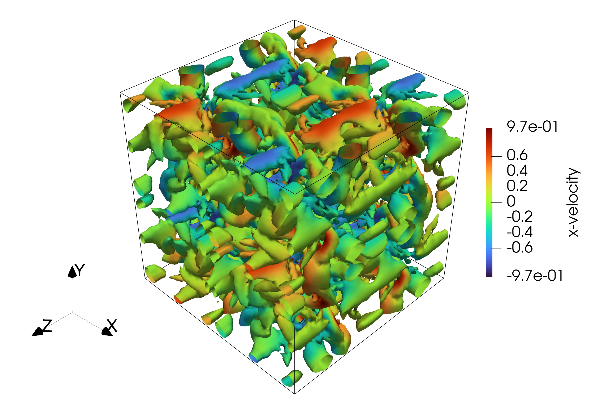
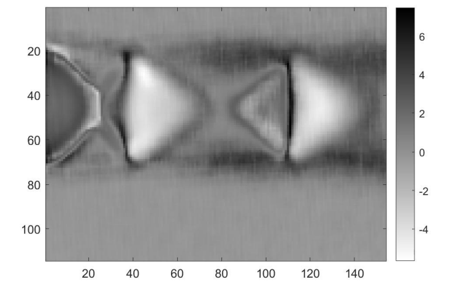
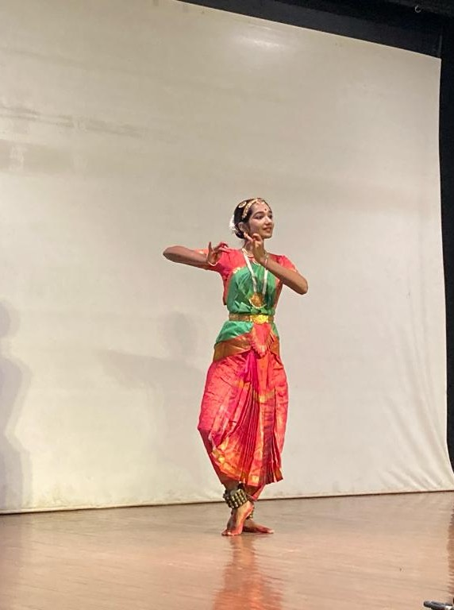
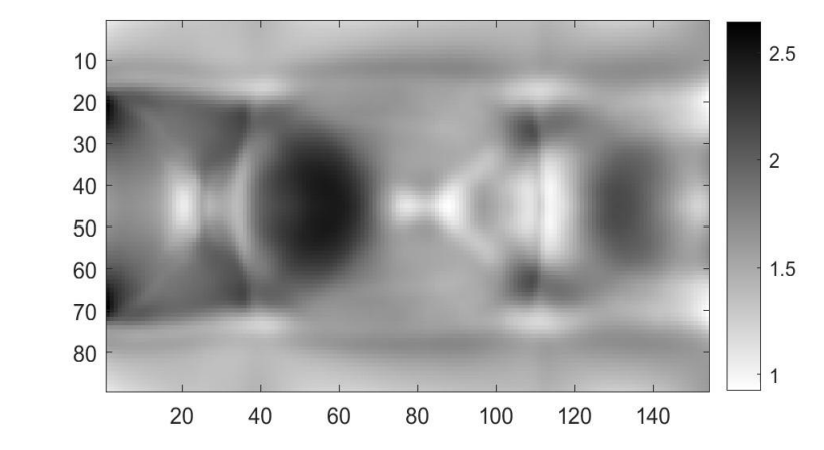
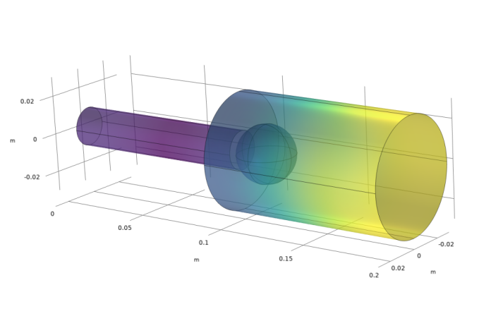
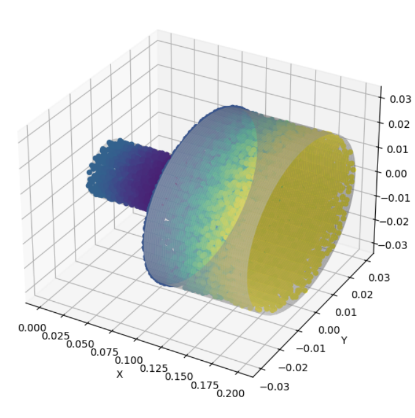
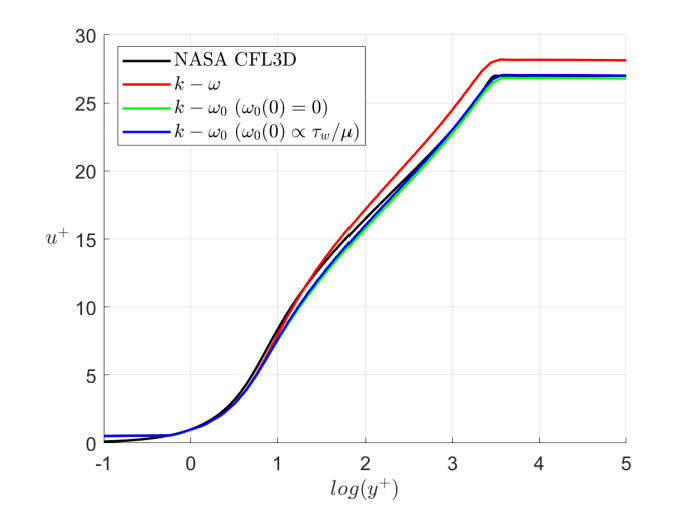
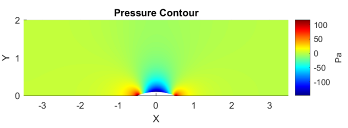
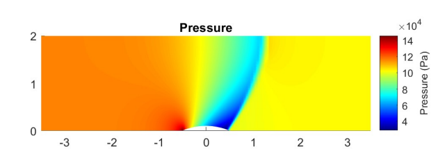
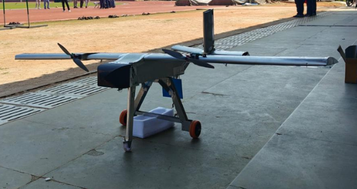

Research Interests
My research interests lie in:
- Computational fluid dynamics
- Experimental aerodynamics
- Theoretical fluid mechanics
- Turbulence and flow instabilities
- Nonlinear dynamics
- Data driven modelling
I am particularly interested in understanding complex flow phenomena through a combination of high-fidelity computational methods, experiments, and data-driven modelling.
About Me
I am a final-year Dual Degree student in Aerospace Engineering at IIT Madras, with research interests spanning experimental high-speed aerodynamics, computational methods, and theoretical fluid mechanics. At the Gas Dynamics Laboratory, IIT Madras, I have worked on shock–cavity interactions and shock wave–boundary layer interactions, alongside theoretical work using the method of characteristics to study expansion wave interactions.
During my research internship at Kyoto University, I investigated combustor acoustics and developed a Green's-function-based reduced-order model for predicting pressure distributions.
My growing interest in computational fluid dynamics led me to pursue coursework in CFD through the Advanced level, where I developed a 3-D high-order compressible flow solver in Fortran, first for DNS and subsequently extending it to RANS with the k–ω and novel k–ω0 turbulence models; the latter demonstrated improved numerical stability and accuracy on coarser grids.


Beyond academics and research, I have a strong interest in volunteering and mentoring. I joined Avanti Fellows, IIT Madras as a mentor in my freshman year, working with the student team to support underprivileged students in their preparation for college entrance examinations. I later served as the head of this 40+ member team. Under my guidance, 30+ students from underprivileged backgrounds gained admission to top engineering colleges across India. I am also a classical dancer, with over 10 years of training in Bharatanatyam.

Research Experience
My master's thesis asks what drives unsteadiness in three-dimensional crossing shock wave–boundary layer interactions, and whether the transition from regular to Mach reflection in this configuration is accompanied by hysteresis. I am tackling this in a supersonic wind tunnel with schlieren and oil-flow visualisation alongside unsteady pressure measurements. I have also implemented Background-Oriented Schlieren (BOS) for an axisymmetric open jet case and am now extending it to tomographic BOS to capture the three-dimensional structure of the flow.

I developed a one-dimensional theoretical framework, built on the method of characteristics, for the interaction of moving expansion waves. The solver gives physically reasonable results for head-on interactions of two expansion fans, and I am validating it against an in-house compressible flow solver to establish its accuracy. This work has been accepted for oral presentation at the 26th International Shock Interaction Symposium (ISIS 2026) in Daegu, South Korea.
I was selected for Kyoto University's highly competitive Short Term Academic Research Program, where I studied the acoustic response of a simplified combustor. After computing its eigenfrequencies and response in COMSOL Multiphysics, I built a reduced-order model using a Green's function approach that reconstructs the pressure distribution from the eigenmodes. The model was validated against simulation data and predicts the pressure distribution at any frequency. I presented the results as a poster at the end of the program.


I ran experiments on the shock–cavity shear layer interaction over a tapered cavity with passive air-jet injection. Proper orthogonal decomposition of the schlieren images and power spectral density analysis of the pressure data showed no Rossiter modes, indicating that the acoustic feedback loop and resonant behaviour were suppressed. The work was published in the proceedings of ISSW35.
As a summer research fellow at JNCASR, I modelled temperature profiles in the nocturnal boundary layer with aerosol heat transfer included, and showed that the model reproduces a lifted temperature minimum.
Conference Publications
Projects
I wrote a 3-D compressible flow solver in Fortran90 using high-order compact and explicit finite-difference schemes, and validated the DNS against two canonical benchmarks, the Taylor–Green vortex and inviscid vortex convection. I then added RANS with the k–ω model and a novel k–ω0 model to simulate viscous flow over a flat plate, where k–ω0 showed markedly better numerical stability and better accuracy on coarser grids.


I built an explicit finite-volume incompressible Euler solver in MATLAB using the artificial compressibility method, then extended it to compressible flow with Roe, Van Leer, and AUSM schemes for the interface fluxes. I simulated flow over a bump and verified the solver's accuracy across Mach numbers from 0.4 to 1.4.


I designed and fabricated a fixed-wing UAV with a 2 m wingspan and 8 kg MTOW for long-range maritime surveillance. Aerodynamic, structural, and stability analyses validated the design against the mission requirements, and the airframe was built primarily from aluminium sheets and 3-D printed components.

I modelled the coupled structure–wake oscillator system of Facchinetti et al. (2004) to study vortex-induced vibrations, validated its predictions of hysteretic behaviour, and extended it with nonlinear coupling.
Contact Me
I am currently seeking PhD positions and would be grateful for the opportunity to discuss prospective openings and research collaborations. Faculty members and research groups whose work aligns with my interests are most cordially invited to write to me at ae22b003@smail.iitm.ac.in. I would be glad to furnish any additional information on request.